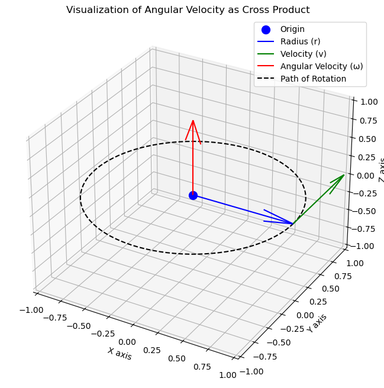

キネマティクスの基礎#
本稿では、ベクトルの行列表現、角速度ベクトルの定義、輸送定理について扱う。人工衛星の運用においては複数の座標系を頻繁に扱うが、このとき輸送定理が非常に重要な役割を果たす。
目的#
ベクトルの行列表現、角速度ベクトルの定義を抑える
異なる座標系での時間微分の関係を理解する
輸送定理をキネマティクスの問題に応用できるようになる
Content#
ベクトルの行列表現
角速度ベクトル
輸送定理
# Import Relevant Libraries
import numpy as np
import matplotlib.pyplot as plt
1.1) ベクトルの行列表現#
定義
質点のキネマティクスとは、力の作用しない質点の運動を扱う。位置・速度・加速度の時間関係を記述する。
ベクトルの行列表現
ベクトルとは、大きさ・向きを持った量である。ベクトルは、変位・速度・加速度といった物理量を記述するのに使用される。
3次元空間のベクトル \(\mathbf{r}\) は以下のように表現される。
ただし、 \(r_1\), \(r_2\), \(r_3\) はそれぞれ各軸の成分を表し、 \(\mathbf{u_1}\), \(\mathbf{u_2}\), \(\mathbf{u_3}\) は各軸の単位ベクトルとする。 形式的に
と記述することにすると、
をベクトル\(\mathbf{r}\)の座標系\(\left\{\mathbf{u}\right\}\)における行列表現と呼ぶ。
座標系
座標系とは、平面や空間での物体位置・向きを定義するために導入される仕組みのことである。直交座標系・斜交座標系・極座標系など様々あるが、人工衛星の姿勢運動を扱う上では右手直交座標系（各軸が直交し、かつ、親指がx軸、人差し指がy軸、中指がz軸の向き）を扱うことが一般的である。そのため、以下、右手系を扱うものとする。
座標系 \(\mathcal{B}\) は3つの直交する単位ベクトルから定義される。
ここで、座標系の原点を \(O_B\) とすると、座標系 \(\mathcal{B}\) は以下のように定義される。
原点位置を省略し、
と記述されることもある。
1.2) An overview/refresher of angular velocity#
Definition
Angular velocity is a vector quantity representing the rate of rotation of an object around an axis. It specifies the rotation speed and direction.
Layman Explanation
Imagine spinning a basketball on your finger. Angular velocity indicates how quickly it spins and in which direction (clockwise or counterclockwise). Faster spins increase angular velocity; stopping the spin reduces it to zero.
Mathematical Description
The angular velocity vector, \(\vec{\omega}\), is the rate of change of angular displacement, \(\theta\), with respect to time, \(t\).
In scalar form for simple rotations around a fixed axis:
In vector form for three-dimensional rotations:
Here, \(\vec{\theta}\) is the angular displacement vector pointing along the rotation axis, with magnitude representing the rotation angle.
For a rotating object in three-dimensional space, the angular velocity vector \(\vec{\omega}\) is expressed along the \(x\), \(y\), and \(z\) axes:
Where:
\(\omega_x\), \(\omega_y\), and \(\omega_z\) are the angular velocity components along the \(x\), \(y\), and \(z\) axes, respectively.
\(\hat{i}\), \(\hat{j}\), and \(\hat{k}\) are the unit vectors along the \(x\), \(y\), and \(z\) axes.
The linear velocity \(\vec{v}\) of a point at a distance \(r\) from the axis of rotation is related to the angular velocity by:
Where \(\vec{r}\) is the position vector from the rotation axis to the point.
Explanation of \(\vec{\omega} \times \vec{r}\)
In the simplest case of circular motion at radius \(r\), with position given by the angular displacement \(\phi(t)\) from the x-axis, the orbital angular velocity is the rate of change of angle with respect to time:
If \(\phi\) is measured in radians, the arc-length from the positive x-axis around the circle to the particle is \(\ell = r\phi\), and the linear velocity is \(v(t) = \frac{d\ell}{dt} = r\omega(t)\), so that \(\omega = \frac{v}{r}\).
In the general case of a particle moving in the plane, the orbital angular velocity is the rate at which the position vector relative to a chosen origin “sweeps out” angle. The diagram shows the position vector \(\mathbf{r}\) from the origin \(O\) to a particle \(P\), with its polar coordinates \((r,\phi)\). (All variables are functions of time \(t\).) The particle has linear velocity splitting as \(\mathbf{v} = \mathbf{v}_{\|} + \mathbf{v}_{\perp}\), with the radial component \(\mathbf{v}_{\|}\) parallel to the radius, and the cross-radial (or tangential) component \(\mathbf{v}_{\perp}\) perpendicular to the radius. When there is no radial component, the particle moves around the origin in a circle; but when there is no cross-radial component, it moves in a straight line from the origin. Since radial motion leaves the angle unchanged, only the cross-radial component of linear velocity contributes to angular velocity.
The angular velocity \(\omega\) is the rate of change of angular position with respect to time, which can be computed from the cross-radial velocity as:
Here the cross-radial speed \(v_{\perp}\) is the signed magnitude of \(\mathbf{v}_{\perp}\), positive for counter-clockwise motion, negative for clockwise. Taking polar coordinates for the linear velocity \(\mathbf{v}\) gives magnitude \(v\) (linear speed) and angle \(\theta\) relative to the radius vector; in these terms, \(v_{\perp} = v \sin(\theta)\), so that:
By understanding angular velocity, we can analyze and describe the rotational motion of objects, which is essential in fields such as mechanics, robotics, and aerospace engineering.
Conclusion
The correct relationship for tangential velocity of a rotating point is \(\vec{v} = \vec{\omega} \times \vec{r}\) because it naturally describes how angular velocity induces perpendicular tangential velocity. The cross product \(\vec{r} \times \vec{v}\) does not directly provide angular velocity without additional normalization and is less intuitive for this purpose.
Reference: Wikipedia on Angular Velocity
'''
Visualizing angular velocity vector
'''
# Origin
origin = np.array([0, 0, 0])
# Define the radius vector (r) arbitrarily
r = np.array([1, 0, 0]) # Example: radius vector along the x-axis
# Define the angular velocity vector (omega) arbitrarily
omega = np.array([0, 0, 1]) # Example: angular velocity vector along the z-axis
# Calculate the tangential velocity vector (v) as the cross product of omega and r
v = np.cross(omega, r)
# Create a 3D plot
fig = plt.figure(figsize=(8, 8))
ax = fig.add_subplot(111, projection='3d')
# Plot a single point at the origin
ax.scatter(*origin, color='blue', s=100, label='Origin')
# Plot the radius vector (r)
ax.quiver(*origin, *r, color='blue', label='Radius (r)')
# Plot the tangential velocity vector (v)
ax.quiver(*r, *v, color='green', label='Velocity (v)')
# Plot the angular velocity vector (omega)
ax.quiver(*origin, *omega, color='red', label='Angular Velocity (ω)')
# Plotting a dotted circular path for rotation
t = np.linspace(0, 2*np.pi, 100)
x = np.cos(t)
y = np.sin(t)
z = np.zeros_like(t)
# Here, we simply plot the circle in the XY-plane
ax.plot(x, y, z, '--k', label='Path of Rotation')
# Setting the plot appearance
ax.set_xlim([-1, 1])
ax.set_ylim([-1, 1])
ax.set_zlim([-1, 1])
ax.set_xlabel('X axis')
ax.set_ylabel('Y axis')
ax.set_zlabel('Z axis')
ax.set_title('Visualization of Angular Velocity as Cross Product')
ax.legend()
plt.show()

1.3) 輸送定理 (Kinematic Transport Theorem)#
輸送定理 は、異なる座標系での時間微分の関係を、その相対角速度を用いて記述する。人工衛星のダイナミクスやロボティクスのように、複数の座標系が相対的に回転する状況において、物体の運動を記述するために重要な役割を果たす。
Theorem 1 (輸送定理)
\(\vec{r}\) が以下の相異なる二つの座標系で表現されるとする。
慣性座標系 \(\mathcal{N}\)
ボディ座標系 \(\mathcal{B}\), 慣性座標系 \(\mathcal{N}\) に対して角速度 \(\boldsymbol{\omega}_{\mathcal{B}/\mathcal{N}}\) を持つ。 The time derivative of \(\vec{r}\) in the inertial frame \(N\) is equal to the time derivative in the rotating frame \(B\), plus the cross product of the angular velocity \(\boldsymbol{\omega}_{\mathcal{B}/\mathcal{N}}\) of frame \(B\) relative to \(N\) and the vector \(\vec{r}\) itself:
I. 輸送定理
\(\vec{r}\) が以下の相異なる二つの座標系で表現されるとする。
慣性座標系 \(\mathcal{N}\)
ボディ座標系 \(\mathcal{B}\), 慣性座標系 \(\mathcal{N}\) に対して角速度 \(\boldsymbol{\omega}_{\mathcal{B}/\mathcal{N}}\) を持つ。
II. Components of the Theorem
\(\frac{\mathcal{N}_{d}}{dt} \left( \vec{r} \right)\): The time derivative of \(\vec{r}\) with respect to the inertial frame \(N\).
\(\frac{\mathcal{B}_{d}}{dt} \left( \vec{r} \right)\): The time derivative of \(\vec{r}\) with respect to the rotating frame \(B\).
\(\boldsymbol{\omega}_{\mathcal{B}/\mathcal{N}}\): The angular velocity vector of the rotating frame \(B\) relative to the inertial frame \(N\).
\(\vec{r}\): The vector of interest, which could represent any physical quantity, such as position or velocity.
\(\times\): Denotes the cross product operation.
Note that \(\hat{b}_i\) are body-fixed vectors, thus we find:
This allows us to write the inertial derivative of the position vector as:
III. Significance
This theorem is essential for:
Transforming physical quantities between different reference frames.
Understanding the effects of rotation on vector quantities.
Designing and analyzing systems in aerospace engineering, robotics, and other fields involving rotational dynamics.
Additional Note
The following shorthand notation is used to denote inertial vector derivatives: